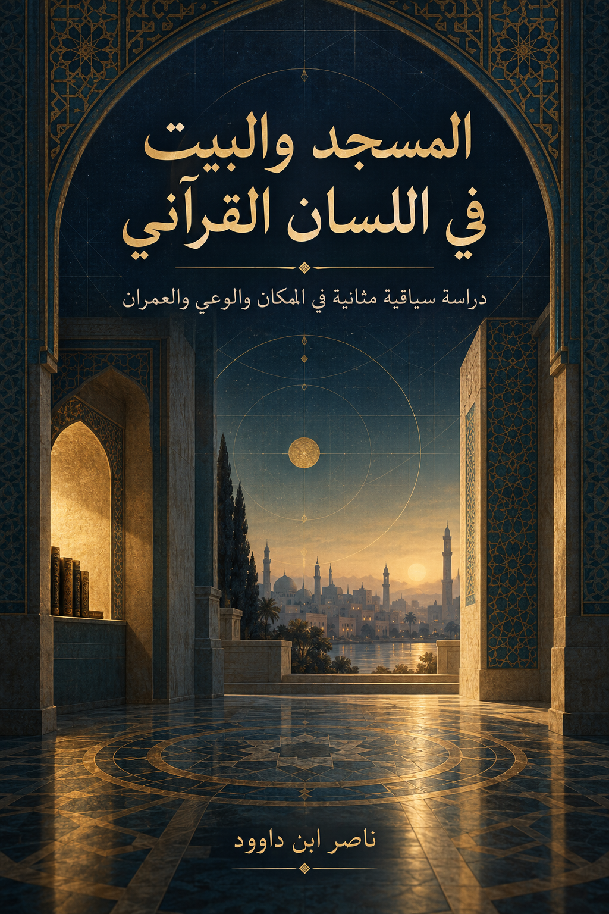

127. المسجد والبيت في اللسان القرآني

دراسة سياقية مثانية في المكان والوعي والعمران، تعرض النماذج المعرفية بوصفها استنباطات بشرية قابلة للاختبار.
النسخة الإنجليزية تكييف مفاهيمي مختصر وليست ترجمة حرفية كاملة؛ يبقى النص العربي المرجع الأساسي.
قراءة PDF داخل الموقع / Read the PDF on this website
جارٍ تجهيز القارئ… / Preparing the reader…
ملخص الكتاب وفهرسه الموضوعي (مقتطف نصي للفهرسة والبحث)
المسجد والبيت في اللسان القرآني
دراسة سياقية مثانية في المكان والوعي والعمران
ناصر ابن داوود
1 مقدمة الكتاب: من ظاهر المكان إلى وظيفته في الهداية
القرآن خطاب هداية يخاطب الإنسان في موضعه من الخلق، ويوقظه إلى ما يترتب على رؤيته واختياره وعمله. ومن هنا لا تكفي في تدبر الآيات قراءةُ الأسماء والأوصاف على أنها تقرير مادي منفصل عن غرض الخطاب؛ فالمكان والخلق والممارسة ترد في سياقات تبيّن ما يتصل بها من عبادة وأمن وذكر وسكن وتطهير وسعي ومسؤولية. يثبت النظر الحسي جانبًا من المشهد، ثم يكتمل التدبر بقراءة علاقاته ووظيفته وأثره في الإنسان.
هذا هو المدخل إلى دراسة «المسجد» و«البيت». فالمسجد في الآيات موضع ذو حضور مكاني، وتكشف سياقاته عن وظائف وقيم مثل القبلة والذكر والاعتكاف والحج والعمارة والتقوى. والبيت يتنوع بين السكن والأمن والمركز والشعيرة والمثل. لا يختزل هذا التنوع في معنى باطني واحد، لكنه يفتح سؤالًا عن الصلة بين المكان والمرجعية، وبين ما يحيط بالإنسان وما يستقر في وعيه.
يقترح الكتاب أن قراءة المكان القرآني تستفيد من الجمع بين الظاهر والوظيفة: نثبت الموضع والفعل أولًا، ونستقرئ سياقه وشبكته، ثم نسأل عمّا يفتحه من تدبر إنساني. ومن هذا المسار تنشأ نماذج مثل «بيت الوعي»، و«الطواف الداخلي»، و«فلك الإنسان»، وقراءة السماء والأرض بين المشهود والمقصود. هذه النماذج أدوات تدبر وبحث، لا معاني قرآنية ثابتة لمجرد مناسبتها؛ ويُعرض كل منها على النص والسياق والشاهد المقابل وفق QCROS.
لا يقرر الكتاب أن كل آية تحمل عددًا محددًا من الطبقات، ولا أن كل استعمال مكاني رمز للنفس. إنما يدعو إلى عدم الوقوف عند قراءة مادية مجتزأة إذا كان السياق يفتح وظيفةً أو مقصدًا أو علاقةً تتجاوز وصف الشيء، وإلى عدم تحويل هذا الانفتاح إلى تأويل غير ممحّص. فالظاهر قاعدة القراءة، والتدبر يستكملها بميزان السياق والشبكة والاستقراء والاختبار العكسي.
2 كيف تقرأ هذا الكتاب
1. ابدأ بالشاهد القرآني وسياقه المباشر، ثم تتبع نظائره في الشبكة قبل اعتماد أي معنى.
2. راقب العلامات بين المعقوفين: [ن] نص، [ب] بيان موثق، [س] استنباط، [و] فرضية، [م] نموذج إجرائي، [ق] مسألة مفتوحة.
3. اقرأ سجل QCROS بوصفه مسار فحص: ما مجموعة الشواهد؟ ماذا يقول السياق؟ ما العلاقات؟ ما الشاهد المعارض؟ وما رتبة النتيجة؟
4. عند ورود قراءة باطنية، اسأل عن الجسر الذي يصلها بالنص، وعن حدودها، وعن المورد الذي قد يضعفها. لا تجعلها بديلًا من دلالة المكان أو الشعيرة.
5. استعمل ملحق الشواهد والفهرسة لإعادة التحقق. نتائج البحث في مؤلفاتي السابقة تقود إلى مواضع ذات صلة، لكنها لا تقوم مقام مقابلة الكتاب الكامل، ولا تجعل اقتراحه نتيجة قرآنية.
6. يقرأ الفصلان 4–7 شبكة الألفاظ في مواردها، ويعرض الفصل 8 النماذج التدبرية، ثم يختبر الفصلان 9–10 أثرها وحدودها، وتلخص الفصول والملحقات مراتب النتائج.
3 خريطة القراءة والفحص
العلاقات والنظائر في الشبكة
← ←
السياق المباشر
الشاهد المؤيد والمعارض
← ←
العلاقات والنظائر في الشبكة
تقرير النتيجة بقدر دليلها
← نص أو بيان أو استنباط ←
تعيين رتبة الدعوى
إعلانها بوصفها احتمالًا قابلًا للفحص
← فرضية أو نموذج ←
تعيين رتبة الدعوى
تُبقى مفتوحة للمراجعة
← نعم ←
هل تحفظ اللفظ والسياق؟
تُقيد أو تُرد بصيغتها الحالية
← لا ←
هل تحفظ اللفظ والسياق؟
4 تنبيه للقارئ
هذا الكتاب يفتح مسارات تدبر في شبكة المسجد والبيت، ولا يضع قاموسًا رمزيًا مغلقًا. ما يرد بين معقوفين يحدد رتبة القول: [ن] نص قرآني، [ب] بيان لغوي موثق، [س] استنباط من السياق والشبكة، [و] فرضية تدبرية، [م] نموذج إجرائي، [ق] مسألة لم تحسم. أمّا وصف الدعوى بأنها «مرشحة» أو «مفتوحة» فيعني أنها لم تستوف بعد جميع شروط الإغلاق.
لا تُغني هذه النسخة عن مقابلة كل شاهد على مصحف مضبوط أو عن تحرير الإحالات إلى الطبعات المعتمدة من مؤلفاتي. وتُستخدم نتائج البحث الرقمية لتحديد مواضع المراجعة، لا بوصفها بديلًا من النص الكامل.
5 الفهرس
1 مقدمة الكتاب: من ظاهر المكان إلى وظيفته في الهداية 2